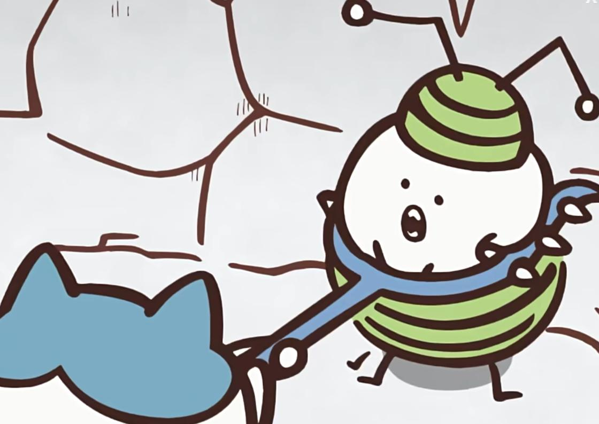
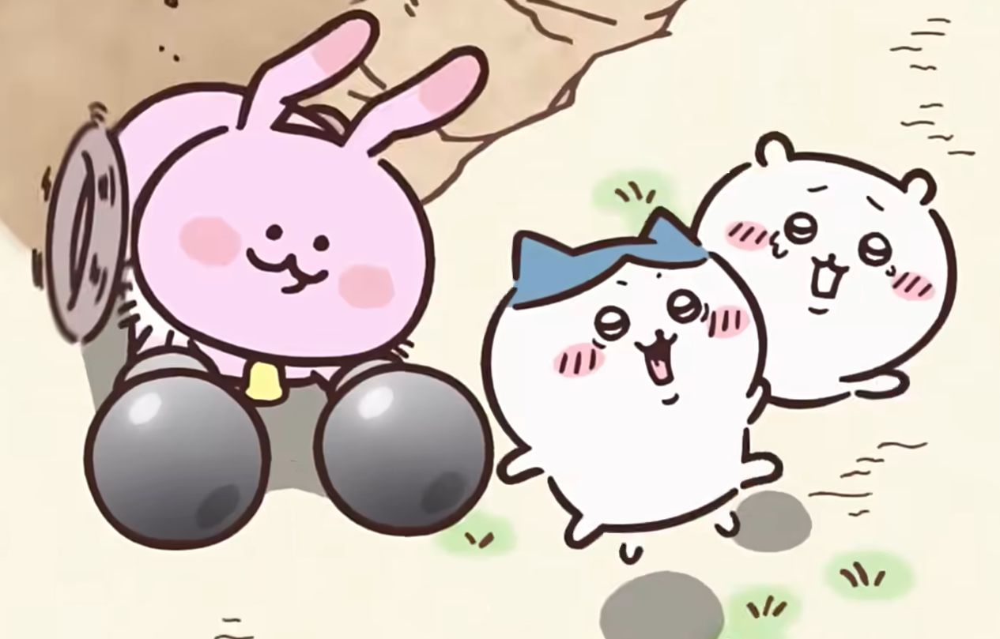
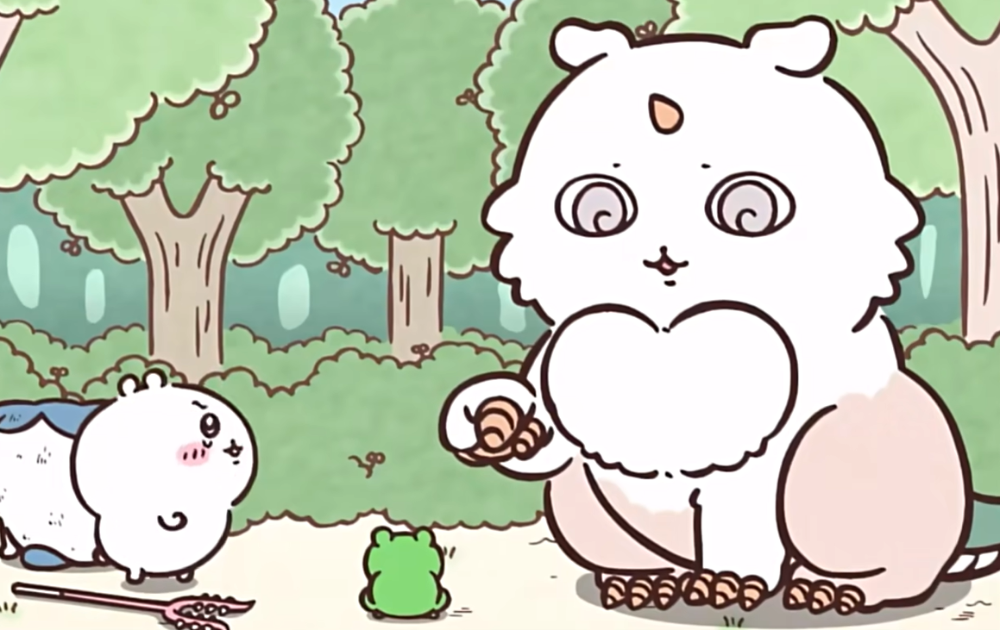
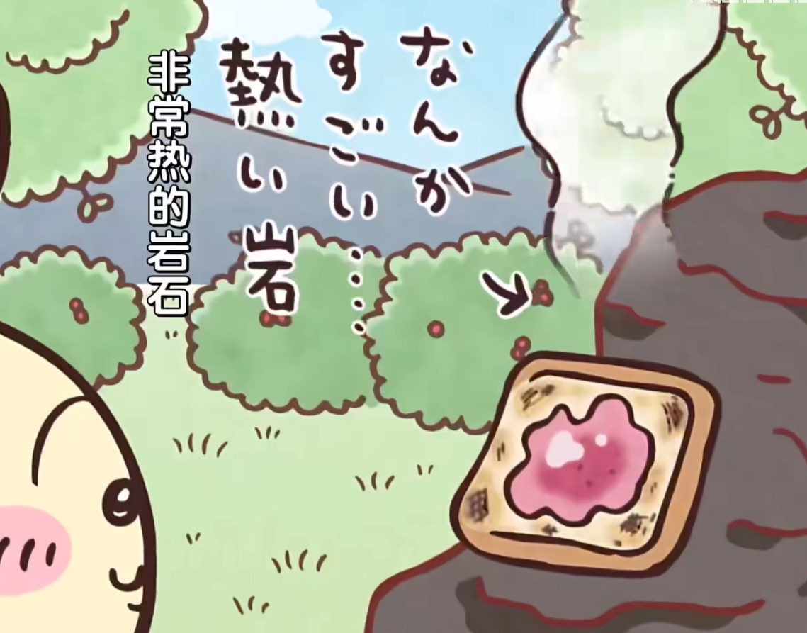
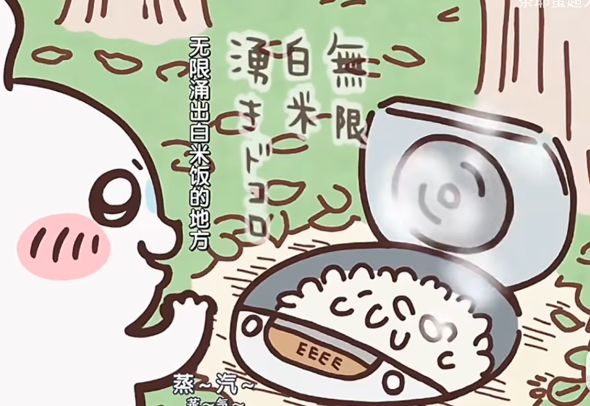
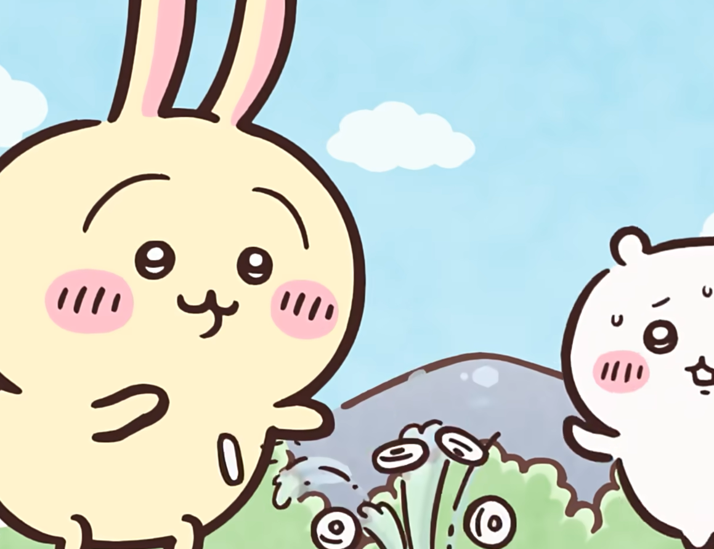

剧情简介
本作的主角是吉伊卡哇（日语：ちいかわ），是一个二头身的小动物角色。这一形象于2017年最初发布在作者ナガノ的推特帐户上。2020年起，关于吉伊卡哇的漫画在独立的推特账号@ngnchiikawa上开始连载。该系列主要由一话完结的独立短篇构成，但同时也有持续多篇的连续篇章，也存在一些跨越多个篇章的剧情关联。漫画主要描述了吉伊卡哇和它的同伴小八和乌萨奇的日常故事。
初看之下，作品可能会给读者一种儿童卡通的感觉，描述可爱的角色们的可爱日常，但随着更加深入的阅读，读者会发现吉伊卡哇世界的黑暗面，以及为了生存需要付出诸多努力的世界观。只有部分角色会说话，而大部分的角色无法使用语言交流，甚至没有详细的面部作画。在漫画的世界中会发生奇怪和超现实的事件，像是路边出现成堆的食物，或者食物从地里长出来，甚至是饭团雨从天上落下。这类事件在漫画中经常发生，而背后的原因或机制在漫画中很少有或没有解释。因此，除了作品本身，对于剧情和世界观的猜测和讨论也构成了观看作品的乐趣之一。
剧情看似以轻松愉快为主，但也不乏现实背景和危险设定，例如连载故事中曾出现一同参加考试但只有一人通过（“第一次除草检定”篇）的情节，或因为使用手杖变出想要的物品而受到诅咒（“神奇的手杖”篇）。
在作品中独特的表达方式被称为“吉伊卡哇语”。漫画中出现的现实中也存在的食物也是作品的特点之一。

虫型怪物

拟态型怪物

奇美拉

拥有加热功能的岩石

无限涌出白米饭的地方

无限涌出口哨糖的地方
一分钟了解动画吉伊卡哇